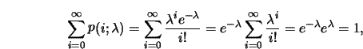
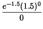
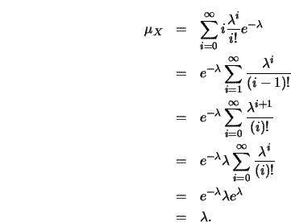
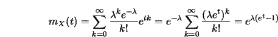
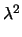
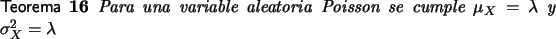

Distribución de Poisson
Una variable aleatoria X se dice que sigue una distribución de Poisson con parámetro|
P[X = x] = p(x; |
(4.1) |
Ejemplo 22
Dado que
p(x; )
)  0
y recurriendo a la expresión:
0
y recurriendo a la expresión:

con lo cual
p(x; ) cumple con las propiedades para
ser una distribución.
) cumple con las propiedades para
ser una distribución.
La herramienta adjunta permite realizar los cálculos relacionados con la distribución Poisson.


Ejemplo 23
Las consultas arriban a un servidor siguiendo una distribución de Poisson con 12 consultas por minuto.
- ¿Cuál es la probabilidad de que el intervalo de tiempo entre las dos próximas consultas sea menor o igual a 7.5 segundos?
- ¿Cuál es la probabilidad de que el intervalo de tiempo entre las dos próximas consultas sea mayor a 10 segundos?
Solución
- Si en 60 seg. arriban 12 consultas entonces en 7.5 segundos arriban
1.5 consultas, por lo tanto
el número de llamadas, X, que llegan en 7.5 segundos sigue una distribución de
Poisson p(x;1.5).
La probabilidad de que después del arribo de una consulta pasen menos de 7.5 segundos antes del arribo de la siguiente debe verse como la probabilidad de que en 7.5 segundos llegue al menos una consulta.
P([X > 0]) = 1 - P([X = 0]) = 1 - p(0, 1.5) = 1 -  = 1 - e-1.5. - Por argumentos similares al caso anterior se tiene que la probabilidad
solicitada es:
p(0, 2).

Para calcular la varianza de una distribución de Poisson es mejor utilizar la función generadora de momentos.
La función generadora de momentos para una Poisson de
parámetro  se calcula recurriendo a la expresión
3.11.
se calcula recurriendo a la expresión
3.11.

Derivando dos veces y evaluando en cero, lema (2), se
obtiene que
E[X2] =  -  que unido al
lema (1) permite obtener que la varianza de una
Poisson
de parámetro
que unido al
lema (1) permite obtener que la varianza de una
Poisson
de parámetro  es
es  .
.
